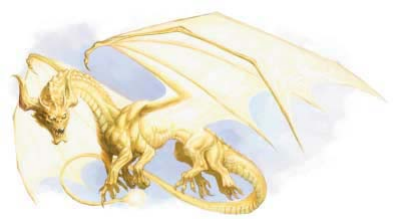

大型龙类

| 生命骰： | 12d12+36（114点生命值） |
| 先攻： | +5 |
| 速度： | 40英尺，飞行120英尺（普通） |
| 防御等级： | 24（-1体型，+5敏捷，+10天生），接触14，措手不及19 |
| 基本攻击／擒抱： | +12/+20 |
| 攻击： | 啮咬+15近战 |
| 全力攻击： | 啮咬+15近战与4次爪抓+10近战 |
| 伤害： | 啮咬2d8+4，爪抓2d6+2 |
| 面宽／触及： | 10英尺/5英尺 |
| 特殊攻击： | 喷吐武器，辉耀灵光，辉耀之力 |
| 特殊能力： | 盲视120英尺，伤害减免15/魔法，龙类特性，能量形态，免疫目盲，敏锐感官，法术抗力20 |
| 豁免： | 强韧+11，反射+13，意志+11 |
| 属性： | 力量18，敏捷20，体质17，智力13，感知16，魅力23 |
| 技能： | 平衡+22，躲藏+16，跳跃+6，聆听+18，潜行+20，搜索+16，侦察+18，翻滚+20 |
| 专长： | 顺势斩，战斗反射，飞越，盘旋，猛力攻击 |
| 地域： | 温暖沙漠或平原 |
| 组织： | 单独，成对或集群（3-6只） |
| 挑战等级： | 14 |
| 宝物： | 标准 |
| 阵营： | 通常混乱中立 |
| 进化： | 13-24HD（大型）；25-36HD（超大型） |
日辉龙是一种危险的龙类生物，潜伏于沙漠与热带草原等酷热地区的天空中。它能将身体局部或全部转化为纯能量形态来摧毁受害者。
日辉龙形似光辉闪耀的巨龙，鳞片辐射出可见的热浪，蝙蝠状双翼散发强光。其龙首以獠牙巨口与尖角为特征，双眼仿佛渗流着液态光芒。该生物拥有八条腿，前四肢更为灵活，能在战斗中造成毁灭性打击。修长的尾部末端悬着一颗脉动的光能球体。日辉龙体长近15英尺，翼展远超30英尺。
日辉龙终生多数时间翱翔于天空，借助强劲热流盘旋，扫视大地以便俯冲捕食。虽为肉食动物，但其消化系统会将吞噬的血肉转化为纯能量与光，经由尾部、双眼及翼膜释放。与多数巨龙相似，日辉龙对贵金属与财宝有着近乎狂热的痴迷，尤其嗜好收集黄金与宝石。
日辉龙可将身躯转化为燃烧的能量形态，借此穿透非生命物质。它们偏好将巢穴筑于沙丘内部，以光辉能量形态休憩。多数巢穴附近设有露天洞穴用于储藏财宝。
日辉龙使用通用语、风族语、火族语及龙语。
日辉龙拥有独特的隐匿方式：因持续发光，它会悬停于猎物与太阳之间的天际，不投射阴影以伺机俯冲突袭。面对强敌时，偏好保持隐匿位置以喷吐武器远程打击。近战中则充分利用光辉能量攻击，对重甲对手施展猛力攻击专长。
喷吐武器（Su）：日辉龙每1d4轮可喷吐90英尺直线灼热黄光，造成15d8点伤害（反射DC 19减半）。该能量束穿透非生命物质（包括构装生物与不死生物）而不损毁，但会波及路径上所有活物。喷吐武器造成纯物理伤害，可被伤害减免抵消，但不受能量抗力影响。
辉耀灵光（Brilliant Aura）（Su）：日辉龙持续散发光芒，提供240英尺照明范围。若无法以同等或更强光源（如日光）掩盖辉光，其躲藏检定承受-20罚值。任何凝视日辉龙的生物每轮需进行强韧豁免（DC 19），失败则目盲3d6分钟。
辉耀之力（Brilliant Energy）（Su）：日辉龙可藉自由动作将前四爪或牙齿转化为光能武器，使这些攻击忽略非生命物质（包括构装生物与不死生物）。
盲视（Blindsight）（Ex）：日辉龙不仅依靠视觉，更藉听觉与嗅觉感知环境，可辨别120英尺内的生物与物体。通常无需进行侦察或聆听检定即可察觉盲视范围内的生物。
龙类特性：日辉龙免疫睡眠与麻痹效果，具备黑暗视觉（60英尺）与昏暗视觉。
能量形态（Energy Form）（Su）：日辉龙可通过移动动作将全身能量化，获得虚体亚种。仅可被其他虚体生物、+1或更高魔法武器、法术、类法术能力及超自然能力所伤。对实体来源伤害有50%回避率（力场效果或幽冥武器除外）。能量形态下可穿透固体（力场效应除外），能使用喷吐武器但无法进行普通攻击，与活物接触不造成伤害。此形态下移动始终静默，若其不愿被听闻则聆听检定无效。
免疫目盲（Immunity to Blindness）（Ex）：日辉龙免疫一切魔法或寻常手段导致的目盲效果。
敏锐感官（Keen Senses）（Ex）：日辉龙在昏暗环境下的视力相当于人类的四倍，正常光线下为八倍。